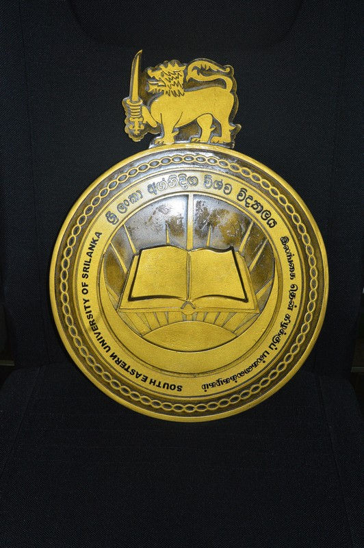

SOUTH EASTERN UNIVERSITY OF SRI LANKA

HISTORY OF SOUTH EASTERN UNIVERSITY
- 1995: Established as the South Eastern University College at Oluvil.
- 1996: Upgraded to a full-fledged national university as the South Eastern University of Sri Lanka.
- 1997: Established the Sammanthurai Campus for Applied Sciences.
- Present: Expanded with modern facilities and new faculties catering to national higher education needs.
AVAILABLE FACULTIES
- Faculty of Arts and Culture – කලා හා සංස්කෘතික පීඨය
- Faculty of Management and Commerce – කළමනාකරණ හා වාණිජ පීඨය
- Faculty of Applied Sciences – අනුප්රයුක්ත විද්යා පීඨය
- Faculty of Islamic Studies and Arabic Language – ඉස්ලාමීය අධ්යයන හා අරාබි භාෂා පීඨය
- Faculty of Engineering – ඉංජිනේරු පීඨය
- Faculty of Technology – තාක්ෂණවේද පීඨය
- Faculty of Graduate Studies – පශ්චාත් උපාධි අධ්යයන පීඨය
GO TO OFFICIAL WEBSITE OF SOUTH EASTERN UNIVERSITY
GO TO HOME PAGE